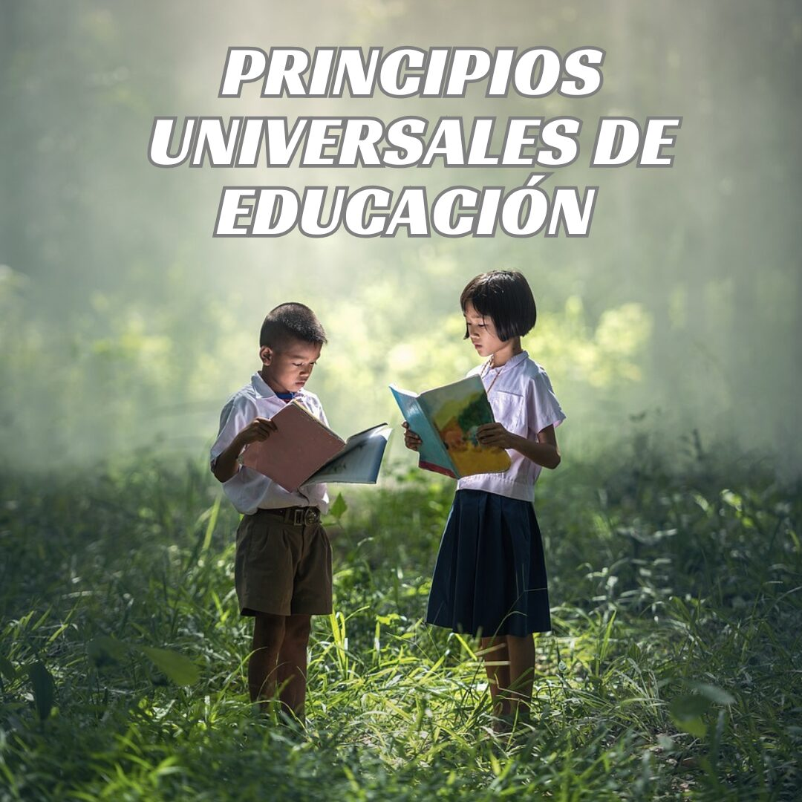
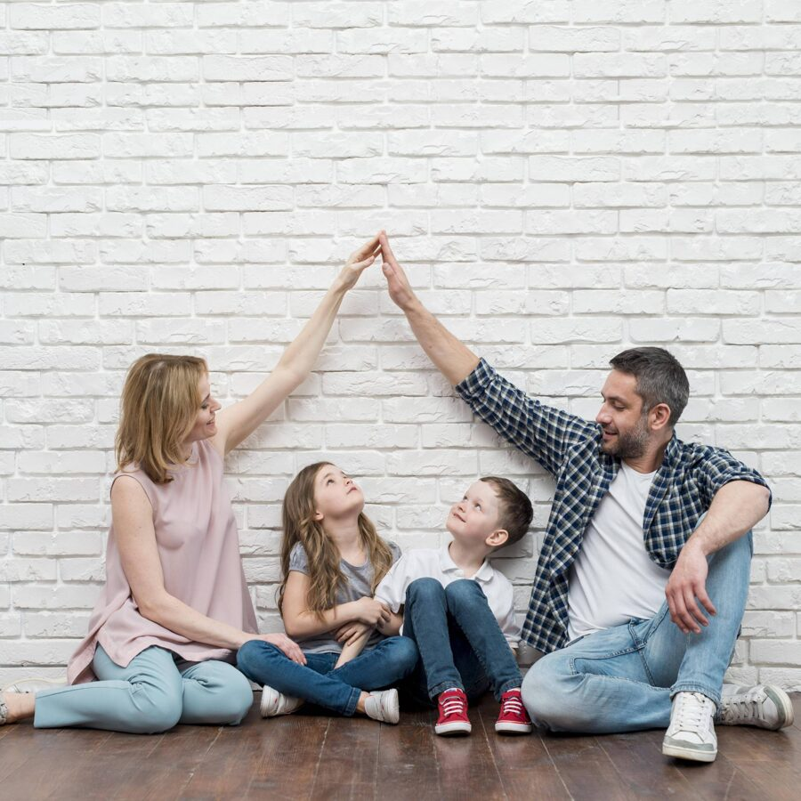
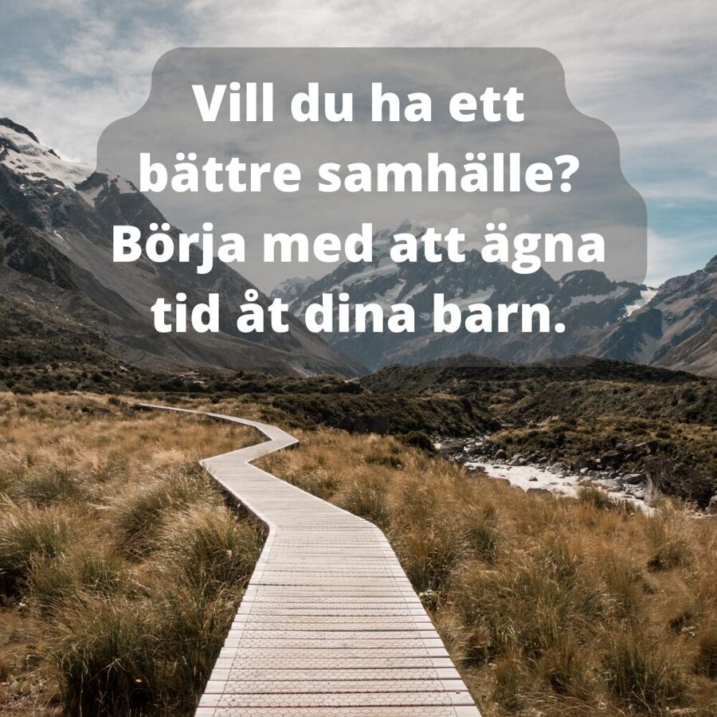
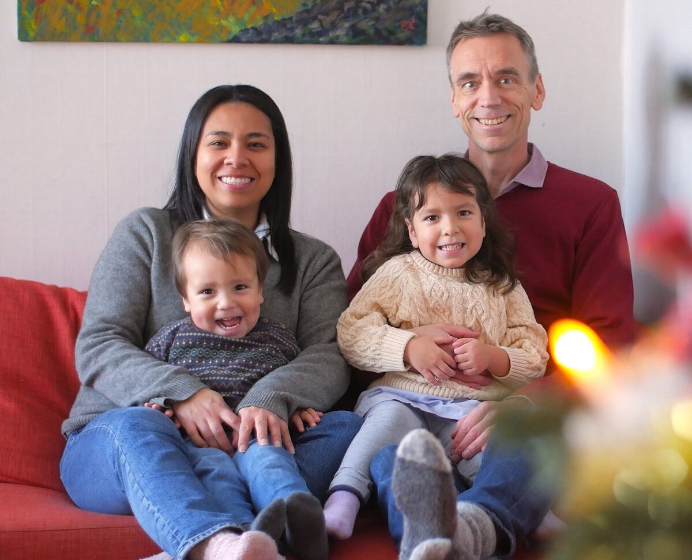

Elige tu programa
Mujer Diseño Original
Un podcast sobre la verdad bíblica para la mujer, el hogar y la educación. Disponible en Youtube y Spotify.
Escuchar en Spotify YoutubeFamilia, Gobierno y Educacion...

Los padres guían a los niños en desarrollo personal y hábitos correctos...
ExplorarPrincipios Universales de Educacion...
La educación divina es para eternidad y vida terrenal.
Explorar
Últimos Videos


Välj ditt program
VÅRA ARTIKLAR
I våra artiklar reflekterar vi kring olika ämnen såsom:
- Människans uppgift
- Samhällets byggstenar
- Människans originaldesign
- Fostran och utbildning
BILDER TILL EFTERTANKE
På den här webbsidan publicerar vi bilder för eftertanke och reflektion. Du kan använda dem fritt om du vill. Exempel: "Våra liv talar högt till dem runt omkring oss. Speciellt till barnen i vårt hem." "Vänj den unge vid den väg han ska vandra. Men se till att också själv gå samma väg!"
UtforskaBOKTIPS

"Landet som glömde Gud" är en bok av Per Ewert som är en studie över hur Sverige gick från att vara ett land byggt på kristen tro och små gemenskaper till att bli ett av de mest individualistiska länderna i världen och där kristen tro inte längre har någon plats i det offentliga livet. En unik bok om svensk nutidshistoria.
UtforskaQuiénes somos
Según la Biblia, la familia es la institución principal de la sociedad que constituye la base de todas las demás esferas, como la sociedad civil, los negocios, la educación y las instituciones estatales. En pocas palabras, una sociedad la construyen las familias, y así como va la familia, así va nuestro mundo. True Parenting quiere ayudar a comprender y aplicar los principios bíblicos para la familia. Esto incluye no solo consejos para la crianza de los hijos, sino también orientación para comprender la sociedad en su conjunto. Cuando entendemos los principios de Dios para la sociedad y la familia, también podemos navegar mejor en el mundo en el que vivimos.
Familia True Parenting
Nuestro equipo
Somos un grupo de padres, educadores y consejeros comprometidos con la difusión de los principios bíblicos para la familia. Cada uno de nosotros ha experimentado el poder transformador de aplicar estos principios en nuestras propias familias.
Descripción del perfil de este miembro del equipo. Puedes incluir su experiencia, formación, visión para True Parenting y cómo aplica los principios bíblicos en su propia familia.
Descripción del perfil de este miembro del equipo. Información sobre su trayectoria, experiencia en consejería familiar o educación, y su contribución al ministerio de True Parenting.
Om oss
Familjen är enligt Bibeln samhällets primära institution som utgör grunden för alla andra sfärer i samhället såsom civilsamhället, näringslivet, utbildning och de statliga institutionerna. Kort sagt, ett samhälle byggs av familjer, och så som det går för familjen, så går det för vårt land och för hela vår värld. True Parenting vill vara till hjälp för att förstå och tillämpa bibliska principer för familjen. Detta innefattar inte bara konkreta tips och råd för uppfostran, utan även vägledning för att hjälpa oss att förstå hela samhället. När vi förstår Guds principer för samhället och familjen, kan vi också bättre navigera i den värld vi lever i.
Familjen True Parenting
Amnesia

"El peor tipo de ceguera es la capacidad física para ver sin la capacidad espiritual para realmente observar lo que has visto".
- Paul Tripp.
Debido a nuestra amnesia, Dios ha creado al mundo físico para ayudarnos a recordar diariamente que no estamos solos...
El padre terrenal es un recordatorio dado por Dios para señalarnos la gloria del Padre celestial...
Pero incluso con todo esto, tenemos la tendencia a ser ciegos y olvidadizos...
De hecho, muchos de nosotros vivimos aburridos y faltos de inspiración...
Del libro "ASOMBRO" de Paul Tripp.
Espero que este texto te sirva de antesala para nuestro plan de transcripción de mayo: Gratitud.

20 maneras de ayudar a los niños a amar la lectura

"Lee lo que amas hasta que ames leer"
¿Qué libros me recomiendas para mis hijos? ...
- Enséñale a tu hijo a leer.
- Si notas que tu hijo muestra poco interés por la lectura, no lo obligues a leer...
¿Cuál de estos consejos deseas poner en práctica? Cuéntame en los comentarios.
Con cariño,
Marleny
Comentarios - 20 maneras...
¡Únete a la conversación!
Superar la ansiedad - Plan de transcripción de abril

"Hoy es mío. El mañana no es asunto mío..."
- Elisabeth Elliot.
Mientras meditaba sobre lo difícil que es tener un corazón contento...
Descarga el plan de transcripción de la biblia para abril AQUÍ.
Con Cariño,
Marleny.

Comentarios - Superar la ansiedad
¡Únete a la conversación!
La educación es la ciencia de las relaciones

"La educación es una atmósfera, una disciplina y una vida"
- Charlotte Mason en Educación Hogareña VOL 1.
Fue en el libro de Charlotte Mason donde leí por primera vez la frase...
Si quieres reflexionar un poco más sobre este tema, te invito a escuchar uno de los episodios de nuestro podcast "Educación Diseño Original" dando click AQUÍ.
Con cariño,
Marleny.
Comentarios - La educación es la ciencia...
¡Únete a la conversación!
¿Vale la pena criar a los hijos?

Educar a los hijos es una tarea que a veces parece inútil...
Disciplina a tus hijos mientras haya esperanza; de lo contrario, arruinarás sus vidas. (Prov 19:18)
Texto adaptado de la enseñanza de Sugel Michelén, "Nuestra responsabilidad como padres" (Enlace)
Comentarios - ¿Vale la pena criar...?
¡Únete a la conversación!
Förstå dina egna och andras behov när du samtalar och kommunicerar

När du kommunicerar med andra såsom dina närstående, kollegor, eller varför inte med en främling, kan du tillämpa så kallad empatisk kommunikation. Empatisk kommunikation är då vi inte bara talar med varandra, utan verkligen lyssnar och försöker förstå inte bara den andres perspektiv utan även vårt eget. En hjälp i detta kan vara att försöka förstå våra behov utifrån vår egen "behovstrappa". En sådan trappa kan grunda sig på Maslows berömda behovstrappa, men det kan vara nyttigt att göra vår egen behovstrappa och ställa frågor till oss själva såsom: "Vilka behov har jag och vad är viktigt för mig? Är det att ha fysisk trygghet? Är det att känna att jag att tillhör ett sammanhang? Är det att få respekt? Kanske att andra ska lyssna på mig och förstå mig på djupet?" Ta gärna en titt på Maslows behovstrappa (genom att googla den t ex), som i korthet består av de grundläggande fysiologiska behoven, följda av trygghet, gemenskap, självkänsla och självförverkligande. Om du förstår dina egna behov vid din kommunikation med andra, blir det också lättare att förstå andras behov och på så vis kommunicera "jag ser dig och jag förstår dig". I till exempel parrelationer kan vi göra övningen att först för oss själva formulera våra behov och kanske skriva ner dem, och sedan dela dem med varandra. Medvetenheten om våra behov kan också vara till hjälp i föräldrarelationer.
Vid ett samtal kan du då vara uppmärksam på vad både den andre personen vill och behöver, men också du själv. Du kan vara medveten om frågor såsom "Vem är du? Vem är jag? Vart vill vi komma och vilka behov har vi? Hur kan vi bättre förstå varandra?" Vi kan då lättare uppnå en meningsfull kommunikation och på så vis främja närhet och förståelse inte bara inom familjen, utan även mellan människor i allmänhet.
Men även med allt detta tenderar vi att vara blinda och glömska...
Kommentarer - Förstå dina egna och andras behov när du samtalar och kommunicerar
Laddar kommentarer...
Delta i konversationen!
Ett gigantiskt samhällsexperiment

Det finns ett märkligt fenomen med många svenska tonåringar, och det är att de ofta inte tycks helt närvarande. De är tystlåtna, blicken är tom och det ser ut som att de helst skulle sätta på sig ett par stora hörlurar och koppla bort sin omgivning - om de inte redan har gjort det. Om du frågar dem något, så förbered dig på ett enstavigt svar. Har du funderat på när detta sker? Jo, det sker när de är med människor som inte är i deras egen ålder. Till exempel: med sina föräldrar.
Men om du sedan skulle se samme tonåring när den är med sina jämnåriga kompisar, så skulle du förmodligen se en annan person: den lyser upp, diskuterar vilt och har åsikter om allt. Ja den kanske till och med ler! Ungdomar lever och verkar nämligen idag i en mycket smal subkultur, nämligen deras-egen-ålder-kulturen.
Många avfärdar dessa avoga beteenden i andra sammanhang med ett skratt - “ja, vad kan man förvänta sig - de är ju ungdomar!”. Men är det normalt? Är det naturligt? Är det sunt?
En av dem som kanske skulle ha en åsikt om detta är den kanadensiske psykologen Gordon Neufeld. I sina teorier lyfter han fram barns och ungdomars naturliga behov av att knyta an till de viktigaste personerna i deras liv - sina föräldrar. Det är framför allt i den relationen - eller med andra mycket närstående vuxna - som de unga kan mogna som människor, menar Neufeld. Vår moderna värld, och framför allt utbildningssystemet, borde återspegla detta behov, menar han. Men i stället har vi skapat samhällen där barnen redan från tidig ålder lyfts ur sin naturliga omgivning - familjen - och sätts i förskola, som sedan blir skola, föreningsliv och så småningom högre utbildning - alltid med jämnåriga som den numerärt överlägsna gruppen vid deras sida. Under hela färden programmeras de unga - i ett ständigt snurrande klockverk - att “knyta bort” från sina föräldrar och i stället “knyta an” till dem som finns till hands - lärare i viss mån, men framför allt deras jämnåriga. Detta medan de fråntas möjligheten att mogna och lära på ett naturligt sätt - med föräldrar, far- och morföräldrar och med övriga vuxna i den närmaste och mest naturliga kretsen - familjen.
Neufeld lyfter också fram anknytningens centrala roll för själva lärandet. “Teaching happens in the context of school, but learning happens in the context of relationship”, uttrycker han det. Med andra ord: Du lär dig mest effektivt av någon du har förtroende för. Det här är ett perspektiv som - om samhället verkligen tog det till sig - skulle kunna revolutionera hela tänkandet kring utbildning, menar Neufeld. Nästa gång du ser en tonåring “koppla bort” sin omgivning, skyll inte på tonåringen själv eller på “dagens ungdom”. Skyll på din egen blindhet - inför en politik där familjen och föräldrarna har förringats och där de offentliga institutionerna har satts i deras ställe, i det gigantiska samhällsexperiment som vi kallar “folkhemmet”.
Urban Skargren
Kommentarer - Ett gigantiskt samhällsexperiment
Delta i konversationen!
Samhället - ett gudomligt uppdrag

Som kristna i dag hamnar vi lätt i den klassiska dikotomin mellan det andliga och det världsliga. I det andliga inryms gudstjänst, bön, bibelläsning, evangelisation med mera. Vårt tal inom denna del av livet handlar ofta om vår medmänskliga kärlek, vår karaktär och vårt tjänande.
I den “världsliga” delen av våra liv finns allt annat - jobb, skola, vård, fritid, ja allt vi gör utanför det kyrkliga livet. I denna del uttalar vi oss gärna om hur vi tycker att samhället ska se ut och hur politiken ska skötas. Detta medan vi i vår kristna gemenskap ofta avgränsar vårt samtal om “samhället” till moral och etik.
“Samhället” - så skulle vi kanske kunna sammanfatta sfären vi lever i utanför kyrkan. Hur ser egentligen en biblisk syn på samhället ut? Här kan vi fundera på vad “samhället” över huvud taget innebär. Vi skulle kunna definiera det som arenan för mänskligt leverne. Här inryms människan och hennes miljöer - “hårdvara” såsom byggnader, gator och torg, men också “mjukvara” som vetenskap, utbildning, vård och media. Var i Bibeln hittar vi något om vår relation till samhället?
För att gå till grunden med ämnet behöver vi gå tillbaka ända till Bibelns början, till Första Mosebok 1. Här hittar vi principerna för mänskligt liv och hela den mänskliga civilisationen. Efter att Gud hade skapat människan i form av en man och en kvinna, välsignade han dem och sade "Var fruktsamma och föröka er och uppfyll jorden! Lägg den under er och råd över fiskarna i havet, över fåglarna under himlen och över alla djur som rör sig på jorden! (1 Mos 1:28)
Detta första och grundläggande bud för människan brukar kallas “den kulturella befallningen” och riktades till mänskligheten som sådan, inte bara till Adam och Eva. Vi skulle också kunna kalla den “civilisationsbefallningen” eller varför inte “samhällsbefallningen”. Den innehåller flera delar:
1) “Var fruktsamma och föröka er” - en kallelse att bilda familjer.
2) “Uppfyll jorden”, en kallelse att utbreda oss geografiskt, att utforska vår planet.
3) Råd över skapelsen. “Råda” kan också översättas “styra över”. Vi är kallade att på ett ansvarsfullt sätt råda över hela skapelsen.
Att döma av ordningen är bildandet av familjer människans viktigaste uppdrag. Häri ingår ett ansvarsfullt ledarskap som kräver kärleksfull vishet. Bibeln slår genom detta också fast att civilisationer i grunden utgörs av familjer. “Så som det går för familjen, så går det för nationen och så går det också för hela vår värld”, har en känd påve uttryckt det.
Att råda över skapelsen är ett nästan lika mäktigt och förtroendefullt uppdrag. Häri ingår att vårda vår värld på ett långsiktigt och hållbart sätt. För båda uppdragen valde Gud ut oss till sin egen representant på jorden - hans förvaltare - och eftersom vi är Guds avbild kan vi i någon mån leda och råda såsom Gud skulle ha gjort. Gud har kallat oss till att bygga civilisationer och att förvalta skapelsen.
Vi kan lägga märke till att denna grundläggande och primära befallning för människan gavs innan synden - vårt avvisande av Gud - kom in i världen. Detta är viktigt. Det innebär att Guds plan för människan redan från första början var att gå ut i världen och skapa samhällen. Ofta tänker vi kanske att om människan inte hade syndat, så hade vi levt kvar i Eden i en slags paradisisk tillvaro. Att vara ute i samhället och arbeta i vårt anletes svett å andra sidan, blir då ett nödvändigt ont, vårt straff för synden. Vårt uppdrag som kristna begränsar sig då till att evangelisera och vänta på frälsningens dag. Med detta perspektiv bör vi lämna samhället till de ogudaktiga, medan vi kristna ägnar oss åt de andliga, högre tingen.
Som vi har sett så var dock enligt Bibeln vårt uppdrag redan från början att gå ut och skapa civilisationer och ta ansvar för dessa. Det var ett gott uppdrag som skulle utföras av ett gott människosläkte, och även om vi människor står under syndens påverkan så förblir detta vårt primära uppdrag från skaparen själv. Vi är och förblir samhällsbyggare.
Men varför gavs då Eden åt människan? Var det inte en lustgård, en plats vigd åt rekreation och njutning? Ja, om vi får tro våra barnböcker så var det nog mest en vilsam djungeltillvaro. Hur går detta ihop med vårt uppdrag som samhällsbyggare? Låt oss titta på vad det faktiskt står i Bibeln.
“Herren Gud tog mannen och satte honom i Edens lustgård för att han skulle odla och bevara den” (1 Mos 2:15) För det första kan vi konstatera att det inte står “för att han skulle njuta av den”, utan för att han skulle “odla och bevara den”. Kanske skulle vi kunna fråga en trädgårdsmästare om vad “odla och bevara” innebär i form av planering, skötsel och noggrannhet? Ordet “lustgård” är också intressant. På engelska används ordet “garden”, vårt ord för trädgård. En trädgård är normalt sett inte vildvuxen, utan en anlagd plats för ordning och skönhet. Det var kanske inte bara vila i Eden ändå.
Genom att placera oss människor just i en trädgård innan vi skulle gå ut i världen, gav Gud oss en förebild för vår stora uppgift: precis som vi skulle odla och bevara den sköna och vackra trädgården i Eden, skulle vi bygga civilisationer och vårda skapelsen med samma omsorg, med samma godhet, med samma ordning och med samma skönhet. Eden var en första grundläggande praktisk kurs.
Nutidsmänniskan tänker kanske ofta på “civilisationen” som en plats för ondska, makt och snedvridna syften. Många längtar till och med bort från civilisationen, ut till den fria och rena naturen. Men då ska vi komma ihåg att Guds syfte med civilisationer är gott. De är tänkta att vara platser präglade av ordning, skönhet och godhet, precis som i Bibelns början, precis som i Edens lustgård.
Här kommer vi tillbaka till frågan om vår tudelade bild av världen och om vi egentligen har en biblisk världsbild av samhället. Enligt Bibeln är samhället inte en plats full med ondska som vi passivt ska åskåda och kanske be för, utan en grundläggande mission för människan, ett gott och vackert uppdrag från Gud, en uppgift som innebär att skapa ordning och skönhet. Att bygga samhällen är vår primära uppgift.
Kanske frågar en del, är det inte Jesu missionsbefallning som är vårt primära uppdrag som kristna? Vi som är frälsta från denna världens ondska ska väl inte ens beblanda oss med världen och dess ondskefulla arenor? Vår uppgift är väl i första hand att evangelisera, göra lärjungar och döpa människor? Plus att viga och begrava, kanske någon lägger till.
Jesus sade: "Jag har fått all makt i himlen och på jorden. Gå därför ut och gör alla folk till lärjungar! Döp dem i Faderns och Sonens och den helige Andes namn och lär dem att hålla allt vad jag har befallt er." (Matt 28:19-20)
“Att göra lärjungar” betyder att göra andra till Jesu efterföljare, att lära dem vad han lärde ut. “Lär dem hålla allt vad jag har befallt er”, betonar Jesus. Jesus instiftade ett nytt förbund, det nya testamentet som det också kallas, men han såg det inte som en motsägelse till det gamla förbundet. Snarare sökte Jesus återinföra Guds ursprungliga vilja hos mänskligheten. Gud hade inte försummat eller förändrat sin vilja, det var människan som hade avvikit från den. Jesus hänvisade därför ofta just till skapelsens början. I fråga om äktenskap sade han “Har ni inte läst att Skaparen från begynnelsen gjorde dem till man och kvinna?” (Matt 19:4), sedan citerade han ord för ord vad Gud hade sagt i 1 Mosebok 2:24, innan syndafallet. Jesus pekade på ordningen som Gud hade instiftat från allra första början.
Vi kan därför förlita oss på att i Jesu ord “allt vad jag har befallt er” ingår även att fullfölja vårt ursprungliga uppdrag som människor, att bygga civilisationer, att bygga samhällen.
Vad får det här för konsekvenser för hur kristna ser på samhällsfrågor? Samhället blir då inte något “där ute” som vi observerar på avstånd och nöjer oss med att be för, utan i stället blir det något som vi har ansvar att utforma och ansvarsfullt råda över. När ondskan och dess värderingar vill vinna mark, behöver vi som tror på Bibelns gud därför fråga oss - fullföljer vi vårt grundläggande uppdrag som människor?
Urban Skargren
Kommentarer - Samhället - ett gudomligt uppdrag
Delta i konversationen!
Lönar det sig att uppfostra barn?

Att uppfostra barn är en uppgift som ibland tycks lönlös. Vi säger till om en sak femtio gånger, kanske hundra gånger, ändå tycks inte barnen lära sig. Det kan till och med se ut som att det blir värre! Kom då ihåg att detta är helt normalt. Har du sagt till hundra gånger, så säg till en hundraförsta gång också! Ge inte upp! I sinom tid kommer du att se frukten. “Ja, men de är redan tonåringar, nästan vuxna, och jag ser ändå ingen frukt. Vad tjänar allt tjat till?”, kanske du säger. Vet då att frukten kan visa sig först när de blir vuxna och måste ta egna, oberoende beslut. Det kan till och med vara så att den visar sig först när de får egna barn! När de kommer med barnbarnen på besök, kan det hända att dina barn säger “Nu först förstår jag mamma!” “Tack pappa för allt du lärde mig! Nu ska jag föra vidare det till mina egna barn!” De kanske inte säger så, men de har bara dina gamla råd att vända sig till och använder dem likväl. Och ditt arbete - ja för det är vad uppfostran är! - får resultat. Ge inte upp, fortsätt uppfostra, det finns hopp!
Fostra din son medan det finns hopp,
sträva inte efter att vålla hans död.
Ordspråksboken 19:18
Adaption av Sugel Micheléns undervisning "Vårt ansvar som föräldrar."
Kommentarer - Lönar det sig att uppostra barn?
Delta i konversationen!
Familjen - samhällets grundbult
Familjen är en märklig plats. För många representerar den livets mening och självklara grundbult. För andra, som fått lida av den, är den förknippad med relationsproblem och ångest. Det är här, i familjen, som den lycklige pappan kysser sin son på huvudet, det här är som mamma stolt svarar femåringen på frågor om den vuxna världen. Här sker diskussionerna med tonåringen och här bråkar man och hustru för att senare förenas i försoningens tårar.
Det är här majoriteten av samhällets befolkning börjar och slutar sin dag, och platsen som många - när det fungerar väl - längtar att komma hem till efter jobbet. Slitet och kämpet, det utförs av många för att upprätthålla hem och familj - dag för dag, vecka för vecka, år för år.
Det är i familjen som den minste lär sig gå, där barnet blir ungdom, där ungdom blir vuxen, och det här här en riktning sätts för våra liv, vare sig vi senare själva måste korrigera den eller inte.
Det är i familjen vi lär oss värdet av oss själva och andra, att ta vara på lek och lycka, men också där vi lär oss tålamod, rättvisa och ansvar.
Ja, det är i familjen vi skapar samhällets så efterlängtade "välfärd", sedan må vi leta tusen lösningar på gator, torg och skolgårdar.
Nyligen hörde jag ett program på public service-radio om de rekordhöga dödsskjutningarna i Sverige. En person med erfarenhet kommenterade hur det på ett tragiskt sätt kan bli attraktivt för en ung person att gå med i ett kriminellt gäng när man blir tillfrågad. Diskussionen om åtgärder tog flera många vändor men konkluderade i hur “alla samhällsinstanser måste samarbeta” för att lyckas. Skola, polis, fritidsgårdar och kommunen nämndes. Familjen nämndes inte alls. För dit har vi kommit, att när vi pratar om samhället och dess beståndsdelar så är det som att familjen inte finns.
Välfärdssamhällets strateger må ignorera den, förlöjliga den, tabubelägga den eller helt försöka eliminera den, men ändå är det bara i familjen som vi skapar en äkta välfärd, en välfärd som kommer inifrån och inte utifrån, och som formar ungdomar som är trygga nog att säga nej till våldet.
Visst bör vi sträva efter ett samhälle som är tryggt för medborgarna, men först måste vi skapa medborgare som är trygga för samhället.
Urban Skargren
Kommentarer - Familjen - samhällets grundbult
Delta i konversationen!
RETOS DE LECTURA
¿Te gustaría leer más? Aquí tienes un espacio donde te motivarás a hacerlo a través de sencillos retos.

SEGUNDO RETO DE MAYO
Desde el 19 de mayo hasta el 14 de junio nos sumergiremos en un tema que es clave...

El manual está disponible para descarga gratuita... AQUÍ.
El manual tiene 103 páginas...
En esta ocasión no tendremos mini retos... AQUÍ.
PRIMER RETO DE MAYO

En esta ocasión tendremos la libertad de elegir el libro que deseamos leer...
- Busca en tu biblioteca un libro...
- Compra un libro que siempre hayas querido tener...
- Busca en la biblioteca de un familiar...
- Busca un libro de libre distribución...
Si aún no te puedes decidir por un título mira las siguientes recomendaciones...
- Un libro acerca de libros de Ana Ávila - Descarga AQUÍ
- Levanta tu mirada de Josue Barrios - Descarga AQUÍ
- La crianza- varios autores - Descarga AQUÍ
He creado una hoja de mini retos... Descarga la hoja AQUÍ.
Reto de abril

Te doy la bienvenida al reto de lectura del mes de abril...
El reto se realizará desde el 21 hasta el 27 de abril...
- Leer el libro completo durante los 7 días...
- Si consideras que todavía no alcanzas ese nivel...
- HUMANIDAD
- GUERRA
- REEMPLAZO
- AMNESIA
- QUEJA
- CRIANZA
- TRABAJO
Para esta lectura no tendremos mini retos... Únete a nuestro chat AQUÍ.
SEGUNDO RETO DE MARZO

Iniciamos el mes leyendo sobre el contentamiento...
Leeremos a partir del lunes 24 de marzo...
El libro es de acceso gratuito... AQUÍ.
Si tienes problemas con el link de Amazon, descarga el PDF AQUÍ.
Descarga la hoja de mini retos AQUÍ.
PRIMER RETO DE MARZO
Hola y bienvenidos a nuestro primer reto del mes...
El libro tiene 50 páginas así que debes leer mínimo 7 páginas por día...
Para ayudarte a cumplir el reto te compartiré una hoja de mini retos...
Únete a nuestro grupo de whatsapp para compartir con otros tu experiencia.
Link de descarga del libro AQUÍ.
Descarga la hoja de mini retos AQUÍ.
RESURSER
Här rekommenderar vi resurser av olika slag som vi tycker är intressanta. Se undermenyn under "Resurser" ovan för att hitta sidorna.
BÖCKER
Här rekommenderar vi böcker som vi tycker är intressanta.
Landet som glömde Gud
Typ: BOK
Hur kunde Sverige, från att ha varit ett land med en kultur genomsyrad av kristna värden och små kristna gemenskaper, förvandlas till ett land där kristen tro och kristna principer har förlorat sin plats i det offentliga livet? Vilka strategier använde reformatorerna inom kyrkan, skolan och familjen? Och hur lyckades socialdemokratin genomföra en så genomgripande samhällsförvandling att dess vision accepterades även av den politiska oppositionen?
Landet som glömde Gud baseras på Per Ewerts doktorsavhandling och analyserar den politiska process som drev på ett sekulärt och individualistiskt Sverige.
Författare: Per Ewert
ONLINE
Guds syfte med familjen
Vad är Guds syfte med familjen? Vilken roll har familjen i samhället? Det är frågor som Paolo Filliol tar upp i miniserien "Guds syfte med familjen" på Himlen TV7 i en serie på sju avsnitt. Paulus berömmer ämnet som:
- Hur familjen återspeglar Gud själv?
- Vilken auktoritet har Gud gett familjen?
- Vem har ansvaret för barnens utbildning?
- Hur kan vi navigera i alla närboende?

Kurs: Den sexuella revolutionen
Apologia - Centrum för kristen apologetik - arbetar med att förklara och försvara kristen tro. Deras kurs "Den sexuella revolutionen" reder ut de ideologiska och sociala förändringar inom sexualsynen som har skett de senaste åren i samhället.
Man jämför denna utveckling med den bibliska synen på sexualitet. Kursen innehåller föreläsningar av bl.a. Stefan Gustafsson och Ray Baker och man studerar boken Naken utan att blygas av Stefan Gustafsson. Kursanmälningar mottas fram till den 15 februari 2023.

Choice 42
Choice 42 är ett kanadensiskt opinionsbildande ministry som arbetar med frågor runt människovärde i livets första stadier. De har flera videos på detta tema.

GALLERI
Våra bilder är fria att använda och publiceras i andra sammanhang. För att ladda ner en bild, högerklicka på den och välj "Spara bild som".
Vi uppskattar om du länkar till oss, men det är inget krav.

"Våra liv talar högt till dem runt omkring oss. Speciellt till barnen i vårt hem."
Billy Graham

"Vill du ha ett bättre samhälle? Börja med att ägna tid åt dina barn."

"Vänj den unge vid den väg han bör vandra, så viker han ej av från den när han blir gammal."
Ordspråksboken 22:6
Contacto
Si tienes alguna pregunta o quieres ponerte en contacto con nosotros, completa el formulario a continuación.
Kontakt
Om du har några frågor eller vill kontakta oss, fyll i formuläret nedan.
Resurser
Här rekommenderar vi resurser av olika slag som vi tycker är intressanta. Se undermenyn under "Resurser" ovan för att hitta sidorna.
Landet som glömde Gud
BOK
Hur kunde ett traditionellt Sverige, präglat av en kristen kultur och små gemenskaper, omformas till ett land där individens oberoende blivit vår tids självklara grundprincip och där den kristna tron inte mer har någon plats i det offentliga livet? Förändringen genomfördes på tre områden: kyrkan, skolan och familjen. Vilka strategier använde reformatorerna på respektive område? Hur lyckades socialdemokratin genomföra en så genomgripande samhällsförändring att deras samhällsvision till slut accepterades även av den politiska oppositionen? "Landet som glömde Gud" är baserad på Per Ewerts doktorsavhandling och visar den politiska process som drev fram det sekulära och individualistiska Sverige.
Läs mer
Online Resurser
VIDEO SERIE
Utforska vår samling av videoserier som fördjupar sig i bibliska principer för familjen. Dessa videor är utformade för att ge praktiska råd och inspiration för din vardag.
Titta nu
Recursos
Aquí te recomendamos recursos de diferentes tipos que consideramos interesantes. Mira el submenú bajo "Recursos" arriba para encontrar las páginas.
El país que olvidó a Dios
LIBRO
¿Cómo pudo una Suecia tradicional, marcada por una cultura cristiana y pequeñas comunidades, transformarse en un país donde la independencia individual se ha convertido en el principio obvio de nuestro tiempo y donde la fe cristiana ya no tiene lugar en la vida pública? El cambio se implementó en tres áreas: la iglesia, la escuela y la familia. ¿Qué estrategias utilizaron los reformadores en sus respectivas áreas? ¿Cómo logró la socialdemocracia implementar un cambio social tan radical que su visión social fue finalmente aceptada incluso por la oposición política? "El país que olvidó a Dios" se basa en la tesis doctoral de Per Ewert y muestra el proceso político que impulsó la Suecia secular e individualista.
Leer más
Recursos en línea
SERIE DE VIDEOS
Explora nuestra colección de series de videos que profundizan en los principios bíblicos para la familia. Estos videos están diseñados para brindarte consejos prácticos e inspiración para tu vida diaria.
Ver ahora
Nuestro Patreon
En True Parenting, trabajamos apasionadamente para fortalecer a las familias a través de principios bíblicos, ofreciendo recursos, artículos y contenido que transforman vidas. Pero para seguir creciendo y llegar a más hogares, necesitamos tu apoyo.
¿Por qué deberías apoyarnos?
Tu donación a través de Patreon nos permite:
- Hacer sostenible nuestro ministerio: Cubrir costos operativos y mantener nuestros recursos gratuitos accesibles para todos.
Además, al convertirte en nuestro patrón, obtendrás beneficios exclusivos:
Únete a nosotros para construir un futuro donde las familias prosperen bajo los principios de Dios. ¡Tu apoyo marca la diferencia!
¿Tienes preguntas sobre cómo apoyar? Escríbenos en nuestra página de contacto.
Vår Patreon
På True Parenting arbetar vi passionerat för att stärka familjer genom bibliska principer, och erbjuder resurser, artiklar och innehåll som förvandlar liv. Men för att fortsätta växa och nå fler hem behöver vi ditt stöd.
Varför ska du stödja oss?
Din donation via Patreon gör det möjligt för oss att:
- Göra vår tjänst hållbar: Täcka driftskostnader och hålla våra gratisresurser tillgängliga för alla.
Dessutom, genom att bli vår patron, får du exklusiva förmåner:
Gå med oss för att bygga en framtid där familjer blomstrar under Guds principer. Ditt stöd gör skillnad!
Har du frågor om hur du kan stödja? Skriv till oss på vår kontaktsida.
Comentarios - Amnesia
Cargando comentarios...
¡Únete a la conversación!